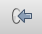

重要
翻訳は あなたが参加できる コミュニティの取り組みです。このページは現在 100.00% 翻訳されています。
18.2. レッスン: DBマネージャを使用してQGISで空間データベースと連携する
すでにQGISや他のツールで多くのデータベース操作を実行する方法を見てきましたが、今度は、この同じ機能の多くに加えてさらに管理指向のツールを提供するDB管理者ツールを検討します。
このレッスンの目標： QGISのDBマネージャを使用して、空間データベースと対話する方法を学びます。
18.2.1. ★☆☆ （初級レベル） 理解しよう: DBマネージャでPostGISデータベースを管理する
最初にDBマネージャのインタフェースを開く必要があります。それには メニューを選択するか、ツールバー上の  DBマネージャ アイコンを選択します。
DBマネージャ アイコンを選択します。
すでに設定した接続が表示され、myPG セクションとその public スキーマを展開すると、前のセクションで扱ったテーブルを見ることができるはずです。
まず最初に気づくのは、データベースに含まれるスキーマに関するメタデータが表示されるようになったことです。

スキーマはPostgreSQLデータベースのデータテーブルやその他のオブジェクトをグループ化する方法であり、権限やその他の制約のためのコンテナでもあります。PostgreSQLのスキーマの管理はこのマニュアルの範囲外ですが、PostgreSQL documentation on Schemas にスキーマに関するより多くの情報があります。DBマネージャを使用して新しいスキーマを作成することができますが、効果的に管理するためにはpgAdmin IIIやコマンドラインインタフェースのようなツールを使用する必要があります。
DBマネージャは、データベース内のテーブルを管理するために使用できます。すでに、コマンドライン上でテーブルを作成し管理するためのさまざまな方法を見てきていますが、ここでDBマネージャでこれを行う方法を見てみましょう。
まず、ツリー内の名前をクリックして 情報 タブの中を見ることで、テーブルのメタデータを見てみることは有用です。

このパネルでは、テーブルについての 一般情報 も、ジオメトリと空間参照系に関してPostGIS拡張が維持している情報を見ることができます。
情報 タブで下にスクロールした場合、表示しているテーブルに対して、 属性 、 制約 、 インデックス についての詳細な情報を見ることができます。

単にレイヤツリーにレイヤの属性テーブルを表示することによって、これを行う可能性がありますほとんど同じ方法でデータベース内のレコードを見てDBマネージャを使用することも非常に便利。 テーブル タブを選択して、データを閲覧できます。

地図プレビューでレイヤのデータが表示される プレビュー タブもあります。
ツリー内のレイヤを右クリックし、 キャンバスに追加 をクリックすると地図にこのレイヤが追加されます。
これまでのところはデータベース、そのスキーマとテーブル、それらのメタデータを閲覧しているだけですが、もしテーブルを変更して列を追加したいとしたらどうでしょう。DBマネージャを使えば、これを直接行うことができます。
ツリーで、編集するテーブルを選択します
メニューから を選択し、 テーブルプロパティ ダイアログを表示します。

列を追加するには、このダイアログを使用してジオメトリ列を追加し、既存の列を編集したり、列を完全に削除できます。
制約 タブを使用、どのフィールドが主キーとして使用されるか、既存の制約を削除するために管理できます。

インデックス タブは、空間索引と通常のインデックスの両方を追加および削除するために使用できます。

18.2.2. ★☆☆ （初級レベル） 理解しよう: 新しいテーブルを作る
データベース内の既存のテーブルでの作業のプロセスを一通り終えましたので、ここでDB マネージャを使用して新しいテーブルを作成してみましょう。
まだ開いていない場合は、DBマネージャウィンドウを開き、データベースに既にあるテーブルのリストが表示されるまでツリーを展開します。
メニューから テーブル --> テーブルを作成 を選択し、 [テーブルの作成]ダイアログを開きます。
デフォルトの
Publicスキーマを使用し、テーブル名をplacesとします。以下のように
id,place_name,elevationフィールドを追加しますidフィールドが主キーとして設定されていることを確認します。ジオメトリカラムを作成 のチェックボックスをクリックし、
POINT型に設定されていることを確認し、名前をgeomにして、4326を SRID として指定します。空間インデックスを作成 の横にあるチェックボックスをクリックし、作成 をクリックしてテーブルを作成します。
テーブルが作成されたことを知らせるダイアログを閉じ、 閉じる をクリックして「テーブル作成」ダイアログを閉じます。
これで、DBマネージャで、テーブルを検査できますし、もちろんその中にデータがないことがわかります。ここからレイヤのメニューで 編集を切替 できます、テーブルに場所の追加を開始します。
18.2.3. ★☆☆ （初級レベル） 理解しよう: 基本的なデータベース管理
DB マネージャを使えば、基本的なデータベース管理のタスクを行うこともできます。より完全なデータベース管理ツールの代わりにはなりませんが、データベースを維持するために使えるいくつかの機能を提供します。
データベーステーブルは、多くの場合、非常に大きくなることがあり得ますし、頻繁に変更されているテーブルは、もはやPostgreSQLで必要とされてないレコードの残渣を残したままにすることがあります。 VACUUM コマンドは一種のガベージコレクションを行い、パフォーマンス向上のためにテーブルを圧縮したりオプションで分析します。
DB マネージャから VACUUM ANALYZE コマンドを実行する方法について見てみましょう。
DBマネージャツリーにあるテーブルのひとつを選択します
メニューから を選びます
PostgreSQLはこれで操作を実行します。テーブルの大きさにもよりますが、完了までに時間がかかるかもしれません。
VACUUM ANALYZE処理については、PostgreSQL Documentation on VACUUM ANALYZE に詳細が記載されています。
18.2.4. ★☆☆ （初級レベル） 理解しよう: DBマネージャでSQLクエリを実行する
DBマネージャはまた、データベーステーブルに対してクエリを記述し、結果を表示するための方法を提供します。すでに ブラウザ パネルの中のこの種の機能を見てきましたが、再びここでDBマネージャでそれを見てみましょう。
ツリーにある
linesテーブルを選択します。[DB マネージャ]ツールバーで SQLウィンドウ ボタンを選択します。

次の SQLクエリ を与えられたスペースに構成します
select * from lines where roadtype = 'major';
クエリを実行するには、 実行（F5） ボタンをクリックします。
Result パネルに一致するレコードが表示されているはずです。

新規レイヤとして読み込む のチェックボックスをクリックして地図に結果を追加します。
id列を ユニーク値のカラム として、geom列を ジオメトリのカラム として選択します。レイヤ名（接頭辞） として
roads_primaryを入力します。読み込み をクリックして地図に新しいレイヤとして結果を読み込みます。

クエリと一致したレイヤーは今、地図上に表示されます。もちろんこのクエリツールは、以前のモジュールとセクション中で見たものなど、任意のSQLコマンドを実行するために使用できます。
18.2.5. DBマネージャを使用したデータベースへのデータのインポート
コマンドラインツールを使用して空間データベースにデータをインポートする方法をすでに見てきました。次に、DBマネージャを使用してインポートを行う方法を学習しましょう。
[DBマネージャ]ダイアログボックスのツールバー上の レイヤー/ファイルを読み込み ボタンをクリックしてください。
 入力データセットとして
exercise_data/projected_dataからurban_33S.shpファイルを選択します。フォームの値の一部を事前に埋めるために、 オプションを更新 ボタンをクリックしてください。
新しいテーブルを作成 オプションが選択されていることを確認してください
変換前SRID`を ``32722` に、 変換後SRID`を ``4326` に指定します
空間索引を作成 の横にあるチェックボックスをオンにします。
インポートを実行するために OK をクリックします

読み込みが成功したことを知らせるダイアログを閉じます
DBマネージャツールバーにある リフレッシュ ボタンをクリックします
これで、ツリーでテーブルをクリックすることで、データベース内のテーブルを検査することができます。Spatial ref: が WGS 84 (4326) と表示されていることを確認し、データが再投影されていることを確認します。

ツリー中のテーブルを右クリックして キャンバスに追加 を選択すると地図にレイヤとしてテーブルが追加されます。
18.2.6. DBマネージャを使用したデータベースからのデータの書き出し
DB マネージャは空間データベースからデータを書き出すためにも当然使用できますので、それがどのように行われるかを見てみましょう。
ツリーで
linesレイヤを選択し、ツールバーの ファイルにエクスポート ボタンをクリックして ベクタファイルに出力する ダイアログを表示します。... ボタンをクリックして 出力ファイル を選択し、
exercise_dataディレクトリにurban_4326という名前でデータを保存します。変換後SRID に
4326を設定します。OK をクリックしてエクスポートを開始します。

書き出しが成功したことを知らせるダイアログを閉じ、DBマネージャを閉じます。
ブラウザパネルで作成したシェープファイルを検査できます。

18.2.7. 結論
ここまで、QGISのDBマネージャインターフェイスを使用して空間データベースを管理する方法、データに対してSQLクエリを実行する方法、データのインポートとエクスポートの方法について説明しました。
18.2.8. 次は?
次に、これらの同じテクニックを SpatiaLite データベースで使用する方法について説明します。